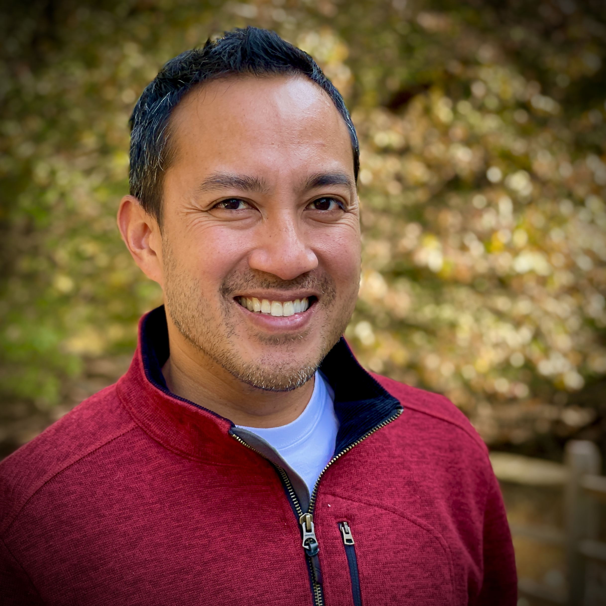

About Carlos
I've spent nearly 30 years at the intersection of creativity, strategy, and innovation -- moving between music, agencies, startups, and consulting without ever losing the thread that ties it all together.
That thread is improvisation. Knowing when to lead, when to listen, and when to trust what you can't fully see yet.

Before anything else -- before the music, before the agencies, before the company -- there is faith. Jesus is my Lord and Savior, and that isn't a footnote to my story. It's the opening line.
My faith shapes how I lead, how I listen, how I show up for my family, and how I serve my clients. It keeps me grounded when things move fast and humble when they go well. It's where my sense of purpose actually comes from.
I don't believe in separating who you are on Sunday from who you are on Monday. They're the same person. That consistency -- between belief and action -- is something I try to model in everything I do.
I started playing piano at six years old. Classical training. The kind that builds discipline before it builds joy. By thirteen I had picked up the guitar, and somewhere in college I fell hard into jazz.
Jazz changed everything. It taught me that structure and freedom aren't opposites -- they're partners. That the best performance happens when you've done the work, internalized the rules, and then let go. I spent nearly a decade playing music in New York City, and I carry that education into every room I walk into.
I was also a writer. Poetry in high school. A lot of it. I've always needed language as a creative outlet -- not just as a tool, but as a way of making sense of the world. That instinct still shows up in my work today, whether I'm writing a brand narrative, a blog post, or a strategy deck.
My professional life has never followed a straight line, and I've stopped pretending it should. Every pivot made sense in context. Every chapter built on the one before it.
My wife Devin is a broadcaster, journalist, on-air host, and faith-driven storyteller with nearly two decades of media experience. She has hosted on QVC, anchored for RCN television, produces and hosts the InSight Out Podcast, and writes devotionals and cultural commentary from a biblical worldview. She is one of the most talented communicators I know -- and I've known a lot of them. I am genuinely her biggest fan.
We have been married nearly 18 years and have three children: Myles (23), Ellie (16), and Grayson (13).
Family isn't something I balance against my career. It's the reason I care about doing good work. It shapes what I'm willing to say yes to and what I'm not.
If you look across everything -- the music, the agencies, the startups, the consulting, the coaching, the writing -- three words keep showing up.
I didn't choose them as a brand positioning. They just kept being true. In jazz, you innovate within a structure. In startups, you invent under pressure. In strategy, you improvise when the plan meets reality. In faith, you trust a process you can't fully control.
This site exists because I want to share what I've learned across all of it -- not as an expert pronouncing from above, but as someone still in the middle of the journey, trying to be useful to the people around me.
If something here resonates, I'd love to hear from you.
Let's Talk
Whether you're a founder looking for strategic clarity, a young professional trying to figure out your next move, or just someone who wants to have a real conversation -- I'm here.
Get In Touch